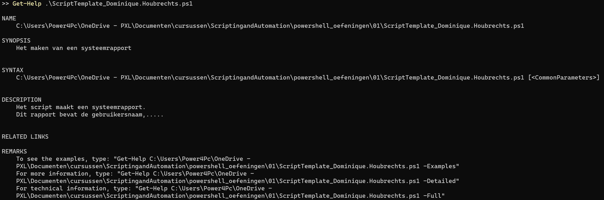
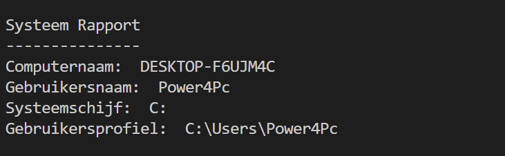

Deel 1 — Introductie en installatie
1. Waarom scripting?
Leg in je eigen woorden uit waarom scripting nuttig is voor systeem- en netwerkbeheer. Geef minstens vier concrete voordelen of toepassingsgebieden.
Mijn antwoord:
Ik vind scripting nuttig voor systeem- en netwerkbeheer omdat wij repititieve taken moeten kunnen automatiseren.
Het automatiseren van taken kan ons in de praktijk zeer veel tijd besparen.
Het verkleint de kans op menselijke fouten aanzienlijk omdat het script - na het uitvoeren van grondige testen - altijd hetzelfde restultaat zal opleveren.
Het uitvoeren van wekelijkse of maandelijkse updates op een groot aantal computers kan met een script in een enkele minuten doorgevoerd worden, wanneer je dit handmatig zou doen, kan dit uren in beslag nemen.
Maar ook het wekelijks of soms dagelijks maken van back-ups kan met een script geautomatiseerd worden.
2. Pakketbeheerders
2.1 Wat is een pakketbeheerder?
Omschrijf wat een pakketbeheerder is en welke taken deze voor de gebruiker automatiseert.
Mijn antwoord:
Een pakketbeheerder is een softwareprogramma waarmee je softwarepakketten kunt downloaden en installeren.
Het voordeel hieraan is dat je niet op zoek moet gaan op het internet naar de correcte versie van de software en dat je weet dat je altijd een veilige en correcte versie van de software download.
2.2 Waarom gebruik je een pakketbeheerder?
Geef minstens drie voordelen ten opzichte van handmatig software downloaden en installeren.
Mijn antwoord:
1. Alle softwarepakketten vind je op een plaats.
2. Alle softwarepakketten zijn veilig en je weet dat je het niet download via een onbetrouwbare bron.
3. De pakketbeheerder zorgt voor automatische updates en beheer van de geïnstalleerde software.
2.3 Installeer software met een pakketbeheerder
Zoek en installeer de volgende software. Noteer voor elk pakket welke pakketbeheerder en welke commando's je gebruikte.
2.3.1 PowerShell 7.x
Mijn antwoord:
winget install --id Micrososft.Powershell --exact --source winget
2.3.2 Windows Terminal
Mijn antwoord:
winget install --id Microsoft.WindowsTerminal --exact --source winget
2.3.3 Visual Studio Code
Mijn antwoord:
winget install --id Microsoft.VisualStudioCode --exact --source winget
2.3.4 Een Windows-versie van het Linux-commando grep
Mijn antwoord:
winget install --id GnuWin32.Grep --exact --source winget
2.3.5 BusyBox
Mijn antwoord:
winget install --id frippery.busybox --exact --source winget
2.3.6 Hoe werk je BusyBox bij?
Mijn antwoord:
winget upgrade --id frippery.busybox-w32 --source winget
3. PowerShell-versie
Mijn antwoord:
$PSVersionTable.PSVersion
3.1 Toon de PowerShell-versie in je huidige sessie
Voer een commando uit dat de volledige PowerShell-versietabel toont.
Mijn antwoord:
$PSVersionTable
3.2 Zoek andere manieren om de versie op te vragen
Geef minstens twee alternatieven. Vergelijk kort welke informatie ze tonen.
Mijn antwoord:
Get-Host
pwsh --version
4. PowerShell execution policies
Opgelet: Voor wijzigingen op LocalMachine zijn beheerdersrechten nodig. Verlaag de beveiliging niet zonder toestemming van de docent. Gebruik bij voorkeur RemoteSigned en herstel de oorspronkelijke instelling na de oefening.
4.1 Controleer de actieve execution policy
Mijn antwoord:
Get-ExecutionPolicy
4.2 Toon de execution policies voor alle scopes
Neem minstens MachinePolicy, UserPolicy, Process, CurrentUser en LocalMachine op in je antwoord.
Mijn antwoord:
Get-ExecutionPolicy -List
4.3 Stel de policy voor LocalMachine in
Met welk commando stel je de execution policy voor de scope LocalMachine in op RemoteSigned? Hoe zou het commando voor Unrestricted eruitzien?
Mijn antwoord:
# RemoteSigned
Set-ExecutionPolicy -ExecutionPolicy RemoteSigned -Scope LocalMachine
# Unrestricted
Set-ExecutionPolicy -ExecutionPolicy Unrestricted -Scope LocalMachine
4.4 Zoek help over execution policies
Gebruik het PowerShell-helpsysteem om algemene informatie en gedetailleerde cmdlet-informatie te vinden.
Mijn antwoord:
Get-Help Get-Process -Detailed
4.5 Zoek help over één parameter
Welke parameter van Get-Help gebruik je om alleen informatie over de parameter ExecutionPolicy van Set-ExecutionPolicy te tonen?
Mijn antwoord:
Get-Help Set-ExecutionPolicy -Parameter ExecutionPolicy
5. PowerShell gebruiken in Visual Studio Code
Zorg ervoor dat je PowerShell-scripts kunt schrijven en uitvoeren in Visual Studio Code.
Tip: Zoek naar een geschikte extensie in de Extensions-weergave van Visual Studio Code.
Noteer welke extensie je installeerde en hoe je controleerde dat ze werkt.
Mijn antwoord:
Extensie: PowerShell
In naam.ps1 heb ik $PSVersionTable.PSVersion Write-Host "Succesvol" getypt.
Daarna heb ik op F5 gedrukt en de output van het script was te zien in de Terminal van VS Code.
6. Eerste script: Naam.ps1
Maak Naam.ps1 in scripts - ps-01-ext-lab/. Het script vraagt geen invoer en toont je naam en woonplaats.
Voorbeeld:
PS> & ".\scripts - ps-01-ext-lab\Naam.ps1"
Naam: Dominique Houbrechts
Woonplaats: Kortessem
6.1 Voer het script op twee manieren uit
Voer het script uit:
- in een command shell, bijvoorbeeld Windows Terminal;
- vanuit Visual Studio Code.
Mijn antwoord:
Write-Host
"Naam: Angelo Switon
Woonplaats: Hasselt"
6.2 Hernoem het script
Hernoem Naam.ps1 naar Mijn Naam.ps1 en voer het opnieuw uit vanuit Windows Terminal en Visual Studio Code. Noteer waarom je het pad anders moet invoeren wanneer de bestandsnaam een spatie bevat.
Mijn antwoord:
1. Rename-Item .\Naam.ps1 .\"Angelo Switon.ps1"
2. .\"Angelo Switon.ps1"
Waarom een andere invoer: Psh ziet dit als een commandlet
7. Visual Studio Code starten als administrator
Maak twee snelkoppelingen waarmee je Visual Studio Code als administrator kunt starten zonder bij elke start de volgende UAC-melding te krijgen.

Wijzig de aanbevolen instelling van User Account Control niet.

Beschrijf de gekozen werkwijze en test beide snelkoppelingen.
Mijn antwoord:
Stap 1 - Geplande taak maken:
General tab
- Create Task,
- Name: VSCode-Admin,
- Aanvinken: Run with highest privileges,
Actions tab
- Browse: C:\Users\12501999\AppData\Local\Programs\Microsoft VS Code\Visual Studio Code
Conditions tab
- Uitvinken: Start the task only if the computer is on AC Power,
- Klik op ok.
Stap 2 - Snelkoppeling 1 (bureaublad):
- Rechtermuisklik op bureablad en kies New → Shortcut,
- Location: schtasks /run /tn "VSCode-Admin", klik next,
- Name: VS Code (Admin), klik finish.
Stap 3 - Snelkoppeling 2 (startmenu):
- Druk op Win + R, typ shell:programs en druk op Enter,
- Kopieer de snelkoppeling van het bureaublad in deze map.
Deel 2 — Help, cmdlets en objecten
8. Help over processen
8.1 Zoek help met de algemene zoekterm process
Gebruik alleen het PowerShell-helpsysteem.
Mijn antwoord:
Get-Help process
8.2 Vraag meer gedetailleerde informatie op
Toon hoe je gedetailleerde, volledige en online help voor een specifieke process-cmdlet kunt openen.
Mijn antwoord:
- Get-Help Get-Process -Detailed
- Get-Help Get-Process -Full
- Get-Help Get-Process -Online
9. Cmdlets ontdekken met Get-Command
9.1 Geef een overzicht van alle cmdlets
Mijn antwoord:
Get-Command -CommandType Cmdlet
9.2 Leg de volgende opdrachten uit
9.2.1 Get-Command -Name *process*
9.2.2 Get-Command -Noun Process
9.2.3 Get-Command -Verb Get -Noun Process
9.2.4 Get-Command -Verb Out
Mijn antwoord:
9.2.1:
Toont alle command's die het woord "process" bevatten. De asterixen zijn "wildcards", zij geven aan dat er eender welk teken mag staan.
9.2.2:
Toont alle command's met het zelfstandig naamwoord "process".
9.2.3:
Hier zoek je op een specifieke waarde voor het "werkwoord" en voor het "zelfstandig naamwoord".
9.2.4:
Toont de commando's met het werkwoord "Out". Deze Cmdlets bepalen waar de output naartoe gaat.
10. Processen en PowerShell-objecten
10.1 Welke twee cmdlets gebruik je om informatie over processen te zoeken?
Mijn antwoord:
Get-Command -Noun Process: toont welke commando's er bestaan voor processen.
Get-Help process: toont hoe je die commando's gebruikt, via de documentatie
10.2 Welke cmdlet vraagt alle systeemprocessen op?
Mijn antwoord:
Get-Process
10.3 Hoe open je de online help van deze cmdlet?
Mijn antwoord:
Get-Help Get-Process -Online
10.4 Hoe toon je alleen de syntaxis van deze cmdlet?
Mijn antwoord:
Get-Command Get-Process -Syntax
10.5 Hoe toon je help over de parameter Id?
Mijn antwoord:
Get-Help Get-Process -Parameter Id
10.6 Hoe toon je alle properties van de uitgevoerde processen?
Mijn antwoord:
Get-Process | Get-Member -MemberType Properties
10.7 Hoe toon je alle methods van de uitgevoerde processen?
Mijn antwoord:
Get-Process | Get-Member -MemberType Method
Bijv: (Get-Process -Name notepad).Refresh()
11. Verschil tussen Get-Help en Get-Command
11.1 Get-Help
Leg uit welke informatie deze cmdlet gebruikt en toont.
Mijn antwoord:
Get-Help haalt zijn informatie uit helpbestanden op je computer.
Name: de naam van de cmdlet
SYNOPSIS: een korte beschrijving in één zin
SYNTAX: hoe je het commando opbouwt
DESCRIPTION: een uitgebreide uitleg
PARAMETERS: uitleg per parameter (met -Detailed of -Full)
EXAMPLES: voorbeelden (met -Examples)
RELATED LINKS: verwante cmdlets
11.2 Get-Command
Leg uit welke informatie deze cmdlet gebruikt en toont.
Mijn antwoord:
Get-Command kijkt naar de commando's die daadwerkelijk beschikbaar zijn op je computer:
- cmdlets en functies uit de geïnstalleerde modules,
- aliassen,
- programma's in de mappen van je PATH
12. Service-informatie als PowerShell-output
Gebruik PowerShell om de aangeduide informatie over de service BITS te tonen: servicenaam, weergavenaam, pad naar het uitvoerbare bestand en status.

Mijn antwoord:
Controleer welke properties er zijn: Get-Service -Name BITS | Get-Member -MemberType Properties
Get-Service -Name Bits | Select-Object ServiceName,DisplayName,Status,BinaryPathName
13. Zoek de PowerShell-opdracht achter dir
Zoek op minstens twee manieren welke PowerShell-opdracht overeenkomt met dir in Windows.
Mijn antwoord:
- Get-Alias dir
- Get-Command dir
- Get-Help dir
14. Maak de terminal leeg
Gebruik de lokale PowerShell-help, niet het internet, om te vinden hoe je het scherm leegmaakt.
Mijn antwoord:
Get-Help clear
14.1 Welke aliassen kun je hiervoor gebruiken?
Mijn antwoord:
Get-Alias -Definition Clear-Host
- cls
- clear
15. Geef een overzicht van alle aliassen
Toon alle aliassen die in je huidige PowerShell-sessie beschikbaar zijn.
Mijn antwoord:
Get-Alias
16. Maak een script met comment-based help
Maak Script_Template_JouwNaam.ps1 in scripts - ps-01-ext-lab/. Vervang JouwNaam eventueel door je eigen naam, zonder tekens die niet in een Windows-bestandsnaam zijn toegestaan.

Voer daarna uit:
Get-Help ".\scripts - ps-01-ext-lab\Script_Template_JouwNaam.ps1"
Get-Help ".\scripts - ps-01-ext-lab\Script_Template_JouwNaam.ps1" -Full

16.1 Wat is het doel van comment-based help?
Mijn antwoord:
Met comment-based help schrijf je documentatie rechtstreeks in je eigen script, in een commentaarblok <# ... #>.
Je kan met Get-Help dus ook uitleg tonen of opvragen voor je eigenscript, net zoals bij ingebouwde cmdlets.
Op deze manier kan je dus info meegeven over wat het script doet, wie het heeft opgemaakt en hoe je het uitvoert, zonder de code te moeten lezen.
Uitleg over de inhoud:
Sleutelwoorden: .SYNOPSIS, .DESCRIPTION, .INPUTS, .OUTPUTS, .NOTES en .EXAMPLE
17. Tekst naar het scherm sturen
Toon de volgende tekst met een PowerShell-cmdlet:
Welkom bij PXL!!!

Mijn antwoord:
Write-Host "Welkom bij PXL!!!"
Write-Output "Welkom bij PXL!!!"
Het verschil: Write-Output stuurt de tekst door in de pipeline, zodat je hem verder kan verwerken. Write-Host toont hem alleen op het scherm. Voor deze oefening werken beide.
17.1 Wat is het verschil tussen Write-Output en Write-Host?
Mijn antwoord:
-
Write-Output stuurt de tekst als object in de pipeline. Zo kan een volgend commando de tekst verder verwerken, of kan je hem opslaan in een variabele of bestand.
Staat er niets meer achter in de pipeline, dan komt de tekst op het scherm.
-
Write-Host schrijft de tekst alleen naar het scherm. Je kan hem niet verder verwerken. Wel kan je er kleuren aan geven, bv. -ForegroundColor Green.
Voorbeeld om het verschil te zien:
$a = Write-Output 'Welkom bij PXL!!!'
$b = Write-Host 'Welkom bij PXL!!!'
Bij
$a verschijnt er niets op het scherm, want de tekst zit in de variabele.
$a bevat de tekst.
Bij
$b verschijnt de tekst wél meteen op het scherm, maar
$b blijft leeg.
Kort:
Write-Output is voor gegevens die verder gebruikt worden, Write-Host is voor meldingen aan de gebruiker.
17.2 Zet de tekst om naar hoofdletters
Stuur dezelfde tekst in hoofdletters naar het scherm zonder de tekst zelf in hoofdletters in je opdrachtregel te schrijven.
Tip: Zoek naar strings, types, methods en ToUpper.
Mijn antwoord:
Stap 1 - het opzoeken van de
methods:
'Welkom bij PXL!!!' | Get-Member -MemberType Method
Stap 2 - het ingeven van de command:
Write-Host ('Welkom bij PXL!!!'.ToUpper())
Het verschil zit in wat je aan Write-Host geeft.
1. Gewone tekst
powershell
Write-Host "Welkom bij PXL!!!"
Hier geef je gewoon tekst mee. Write-Host toont die zoals hij is, dus er is niets extra nodig.
Zet wel een spatie tussen Write-Host en de tekst.
Zonder spatie plakt PowerShell alles aan elkaar tot één commandonaam, en krijg je een fout.
2. Tekst waar eerst iets mee moet gebeuren
powershell
Write-Host ('Welkom bij PXL!!!'.ToUpper())
Hier moet PowerShell eerst een bewerking uitvoeren (.ToUpper()) en pas daarna het resultaat tonen.
PowerShell leest alles na een commando standaard als gewone tekst (argumentmodus).
Zonder haakjes ziet hij .ToUpper() mogelijk als letterlijke tekst en niet als een uit te voeren actie.
De haakjes zeggen: "bereken dit eerst" (expressiemodus).
Dat is dezelfde regel als in de wiskunde: wat tussen haakjes staat, gaat voor.
En de aanhalingstekens? "..." en '...' mag je hier allebei gebruiken. Het enige verschil:
"dubbel" vult variabelen in: "Hallo $env:USERNAME" toont je gebruikersnaam.
'enkel' toont alles letterlijk: 'Hallo $env:USERNAME' toont exact die tekst.
In deze tekst staat geen variabele, dus het resultaat is hetzelfde.
18. Omgevingsvariabelen
Zoek met PowerShell hoe je omgevingsvariabelen gebruikt. Toon vervolgens:
18.1 De computernaam (COMPUTERNAME)
Mijn antwoord:
$env:COMPUTERNAME
Opzoeken van variabelen in het systeem:
Get-ChildItem env:
18.2 De gebruikersnaam (USERNAME)
Mijn antwoord:
$env:USERNAME
18.3 De systeemschijf (SYSTEMDRIVE)
Mijn antwoord:
$env:SystemDrive
18.4 Het gebruikersprofiel (USERPROFILE)
Voorbeeld: C:\Users\Dominique.
Mijn antwoord:
$env:USERPROFILE
18.5 Maak ToonEnvInfo.ps1
Maak ToonEnvInfo.ps1 in scripts - ps-01-ext-lab/. Het script maakt eerst het scherm leeg en toont daarna een systeemrapport met de vier waarden.
Verwachte uitvoer:

Mijn antwoord:
Clear-Host
Write-Host
"Systeem Rapport
----------------------------
Computernaam: $env:COMPUTERNAME
Gebruikersnaam: $env:USERNAME
Systeemschijf: $env:SYSTEMDRIVE
Gebruikersprofiel: $env:USERPROFILE"
19. Processen starten en stoppen
Opgelet: Sluit je bestaande Notepad-sessies voordat je deze oefening uitvoert. Het stopscript sluit alle processen met de naam notepad.
Maak Notepad-Joke.ps1 in scripts - ps-01-ext-lab/ dat vier Notepad-vensters opent.
19.1 Hoe start je Notepad met een cmdlet?
Mijn antwoord:
Stop-Process -Name notepad -ErrorAction SilentlyContinue
1..4 | ForEach-Object { Start-Process notepad }
1..4 maakt de reeks getallen 1, 2, 3, 4.
| stuurt elk getal door naar het volgende commando.
ForEach-Object { ... } voert wat tussen de accolades staat één keer uit per getal, dus 4 keer.
19.2 Hoe toon je alle actieve Notepad-processen?
Mijn antwoord:
Get-Process -Name notepad
19.3 Toon Id, Name en CommandLine
Zorg voor vergelijkbare uitvoer:

Mijn antwoord:
Get-Process -Name notepad | Select-Object Id,Name, CommandLine
19.4 Hoe sluit je Notepad-processen met een cmdlet?
Mijn antwoord:
Stop-Process -Name notepad
19.5 Maak Notepad-Joke-Stop.ps1
Maak Notepad-Joke-Stop.ps1 in scripts - ps-01-ext-lab/ dat alle geopende Notepad-processen afsluit.
Mijn antwoord:
Stop-Process -Name notepad
19.6 Open de vensters gemaximaliseerd
Wijzig Notepad-Joke.ps1 zodat de Notepad-vensters gemaximaliseerd openen.
Mijn antwoord:
Stop-Process -Name notepad -ErrorAction SilentlyContinue
1..4 | ForEach-Object { Start-Process notepad -Windowstyle Maximized }
20. Firewalloefening — Firefox
Let op: Deze oefening wijzigt de Windows Firewall en vereist beheerdersrechten. Voer ze alleen uit op het aangewezen oefensysteem. Verwijder je testregel aan het einde.
Maak firewall-firefox.ps1 in scripts - ps-01-ext-lab/ waarmee je:
- het pad naar
firefox.exe vindt;
- een uitgaande firewallregel maakt die Firefox blokkeert;
- de regel opvraagt en controleert;
- de regel uitschakelt en opnieuw inschakelt;
- de regel verwijdert.
Tip: Zoek via PowerShell-help naar NetFirewallRule. Via wf.msc kun je het resultaat ook grafisch controleren.
Mijn antwoord:
$firefox = (Get-ChildItem -Path 'C:\Program Files' -Filter firefox.exe -Recurse -ErrorAction SilentlyContinue).FullName
Write-Host "Firefox gevonden op: $firefox"
New-NetFirewallRule -DisplayName 'Blokkeer Firefox' -Direction Outbound -Program $firefox -Action Block
Pause
Get-NetFirewallRule -DisplayName 'Blokkeer Firefox'
Pause
Disable-NetFirewallRule -DisplayName 'Blokkeer Firefox'
Write-Host 'Regel uitgeschakeld'
Pause
Enable-NetFirewallRule -DisplayName 'Blokkeer Firefox'
Write-Host 'Regel ingeschakeld'
Pause
Remove-NetFirewallRule -DisplayName 'Blokkeer Firefox'
Write-Host 'Regel verwijderd'
1. Get-ChildItem (= dir) zoekt in C:\Program Files naar firefox.exe. -Recurse zoekt ook in alle submappen, en .FullName geeft het volledige pad.
Het resultaat bewaar je in $firefox, zodat je het pad niet zelf hoeft te typen.
2. New-NetFirewallRule maakt de regel:
-DisplayName = naam van de regel
-Direction Outbound = uitgaand verkeer
-Program = welk programma
-Action Block = blokkeren
3. Get-NetFirewallRule toont de regel. Controleer dat Enabled op True staat en Action op Block.
4. Disable- / Enable- zet de regel uit en weer aan. Daarna toont Enabled respectievelijk False en True.
5. Remove-NetFirewallRule ruimt de testregel op, zoals de opdracht vraagt.
Waarom Pause?
Zonder Pause loopt het script in een fractie van een seconde door, en is de regel al verwijderd voor je iets kon controleren.
Met Pause wacht het script tot je op Enter drukt. Zo kan je tussendoor testen.